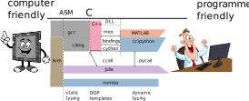
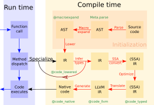

Introduction to Scientific Programming
Scientific programming language is designed and optimized for the use of mathematical formula and matrices wiki
Examples of Scientific programming languages include ALGOL, APL, Fortran, J, Julia, Maple, MATLAB and R.
Key requirements:
- fast execution of the code (complex algorithms)
- ease of code reuse / restructuring
Contrast to general-purpose language:
- less concern with standalone executable/libraby compilation
- less concern with Application binary interface (ABI)
- less concern with business models (library + header files)
- less concern with public/private separation
In many applications, we encounter the task of optimization a function given by a routine (e.g. engineering, finance, etc.)
using Optim
P(x,y) = x^2 - 3x*y + 5y^2 - 7y + 3 # user defined function
z₀ = [ 0.0
0.0 ] # starting point
optimize(z -> P(z...), z₀, ConjugateGradient())
optimize(z -> P(z...), z₀, Newton())
optimize(z -> P(z...), z₀, Newton();autodiff = :forward)
Very simple for a user, very complicated for a programmer. The program should:
- pick the right optimization method (easy by config-like approach)
- compute gradient (Hessian) of a user function
Classical approach: create a fast library and flexible calling enviroment
Crucial algorithms (sort, least squares...) are relatively small and well defined. Application of these algorithms to real-world problem is typically not well defined and requires more code. Iterative development.
Think of a problem of repeated execution of similar jobs with different options. Different level
- binary executable with command-line switches
- binary executable with configuration file
- scripting language/environment (Read-Eval-Print Loop)
It is not a strict boundary, increasing expresivity of the configuration file will create a new scripting language.
Ending up in the 2 language problem.
Low-level programming = computer centric
- close to the hardware
- allows excellent optimization for fast execution
High-level programming = user centric
- running code with many different modifications as easily as possible
- allowing high level of abstraction
In scientific programming, the most well known scripting languages are: Python, Matlab, R
- If you care about standard "configurations" they are just perfect. (PyTorch, BLAS)
- You hit a problem with more complex experiments, such a modifying the internal algorithms.
The scripting language typically makes decisions (if) at runtime. Becomes slow.
Examples
- Basic Linear Algebra Subroutines (BLAS)–MKL, OpenBlas–-with bindings (Matlab, NumPy)
- Matlab and Mex (C with pointer arithmetics)
- Python with transcription to C (Cython)
Convergence efforts
- Just-in-time compilation (understands high level and converts to low-level)
- automatic typing (auto in C++) (extends low-level with high-level concepts)
Julia approach: fresh thinking

A dance between specialization and abstraction.
- Specialization allows for custom treatment. The right algorithm for the right circumstance is obtained by Multiple dispatch,
- Abstraction recognizes what remains the same after differences are stripped away. Abstractions in mathematics are captured as code through generic programming.
Why a new language?
Challenge
Translate high-level thinking with as much abstraction as possible into specific fast machine code.
Not so easy!
x = [1,2,3]
y=x(4/2)
y=x(5/2)In the first case it works, in the second throws an error.
- type instability
- function
inde(x,n,m)=x(n/m)can never be fast. - Poor language design choice!
Simple solution
- Solved by different floating and integer division operation
/,÷ - Not so simple with complex objects, e.g. triangular matrices
Julia was designed as a high-level language that allows very high level abstract concepts but propagates as much information about the specifics as possible to help the compiler to generate as fast code as possible. Taking lessons from the inability to achieve fast code compilation (mostly from python).

- julia is faster than C?
Julia way
Design principle: abstraction should have zero runtime cost
- flexible type system with strong typing (abstract types)
- multiple dispatch
- single language from high to low levels (as much as possible) optimize execution as much as you can during compile time
- functions as symbolic abstraction layers

- AST = Abstract Syntax Tree
- IR = Intermediate Representation
Teaser example
Function recursion with arbitrary number of arguments:
fsum(x) = x
fsum(x,p...) = x+fsum(p[1],p[2:end]...)Defines essentially a sum of inputs. Nice generic and abstract concept.
Possible in many languages:
- Matlab via
nargin, vararginusing constructionif nargin==1, out=varargin{1}, else out=fsum(varargin{2:end}), end
Julia solves this if at compile time.
The generated code can be inspected by macro @code_llvm?
fsum(1,2,3)
@code_llvm fsum(1,2,3)
@code_llvm fsum(1.0,2.0,3.0)
fz()=fsum(1,2,3)
@code_llvm fz()Note that each call of fsum generates a new and different function.
Functions can act either as regular functions or like templates in C++. Compiler decides.
This example is relatively simple, many other JIT languages can optimize such code. Julia allows taking this approach further.
Generality of the code:
fsum('c',1)
fsum([1,2],[3,4],[5,6])Relies on multiple dispatch of the + function.
More involved example:
using Zygote
f(x)=3x+1 # user defined function
@code_llvm f'(10)The simplification was not achieved by the compiler alone.
- Julia provides tools for AST and IR code manipulation
- automatic differentiation via IR manipulation is implemented in Zygote.jl
- in a similar way, debugger is implemented in Debugger.jl
- very simple to design domain specific language
using Turing using StatsPlots @model function gdemo(x, y) s² ~ InverseGamma(2, 3) m ~ Normal(0, sqrt(s²)) x ~ Normal(m, sqrt(s²)) y ~ Normal(m, sqrt(s²)) end
Such tools allow building a very convenient user experience on abstract level, and reaching very efficient code.
Reproducibile research
Think about a code that was written some time ago. To run it, you often need to be able to have the same version of the language it was written for.
Standard way language freezes syntax and guarantees some back-ward compatibility (Matlab), which prevents future improvements
Julia approach allows easy recreation of the environment in which the code was developed. Every project (e.g. directory) can have its own environment
Is an independent set of packages that can be local to an individual project or shared and selected by name.
A package is a source tree with a standard layout providing functionality that can be reused by other Julia projects.
This allows Julia to be a rapidly evolving ecosystem with frequent changes due to:
- built-in package manager
- switching between multiple versions of packages
Package manager
- implemented by Pkg.jl
- source tree have their structure defined by a convention
- have its own mode in REPL
- allows adding packages for using (
add) or development (dev) - supporting functions for creation (
generate) and activation (activate) and many others
Julia from user's point of view
compilation of everything to as specialized as possible
- very fast code
- slow interaction (caching...)
- generating libraries is harder
- think of
fsum, - everything is ".h" (Eigen library)
- think of
- debugging is different to matlab/python
extensibility, Multiple dispatch = multi-functions
- allows great extensibility and code composition
- not (yet) mainstream thinking
- Julia is not Object-oriented
- Julia is (not pure) functional language